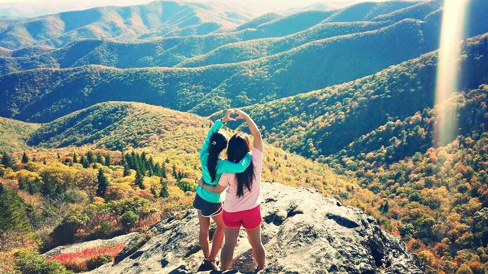

My Life Outdoors
Hiking in the Mountains
I grew up in Asheville, North Carolina. My childhood and teenage years consisted of a lot of hiking. There are no mountains in Chapel Hill, but my dog and I love to discover new trails around RTP.
Waterfalls
There are several natural waterfalls in Asheville. For long hikes, waterfalls and streams are a useful source of water. Once, I went on a hike that I thought would be 3 miles long but ended up being 10 miles, so I didn't bring enough water. Thankfully, there were plenty of streams and waterfalls to stock up.
Climbing
I've only ever been outdoor rockclimbing once. However, this was one of my most memorable experiences, and I would love to go back again!
Traveling
I'm the type of person who doesn't enjoy traveling unless it's with people who are closest to me. I've been on several trips with my partner and dog during undergrad. We are planning to go camping with two of our closest friends during Spring Break 2018!
California
Bahamas
Grand Canyon
Exercise
Running
I love to run! Here are some of my favorite trails:
- Bolinwood Trail, Chapel Hill
- Umstead Trail, Chapel Hill
- Cox Mountain Trail, Eno River State Park
- Carrier Park, Asheville
- DuPont National Forest trails, Brevard
Floor Workouts
Here is my go-to YouTube video for 30 minute glute, legs, and abs. These are some of the workouts:
- Curtsy Squats
- Bridges
- Mountain Climbers
- Up-and-Down Planks
- Side Planks
“And will you succeed? Yes you will indeed! (98 and 3/4 percent guaranteed.)”